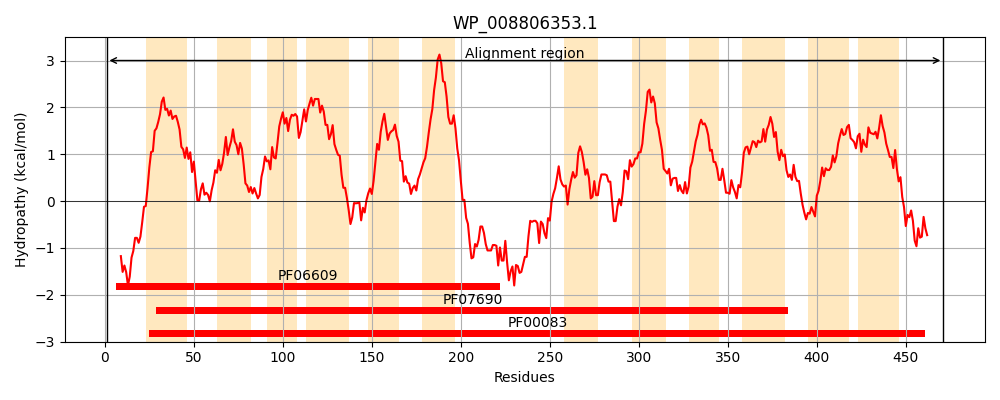
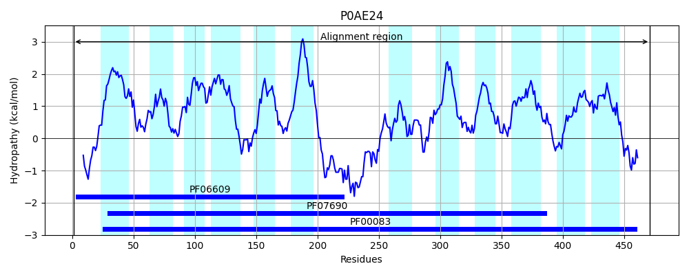
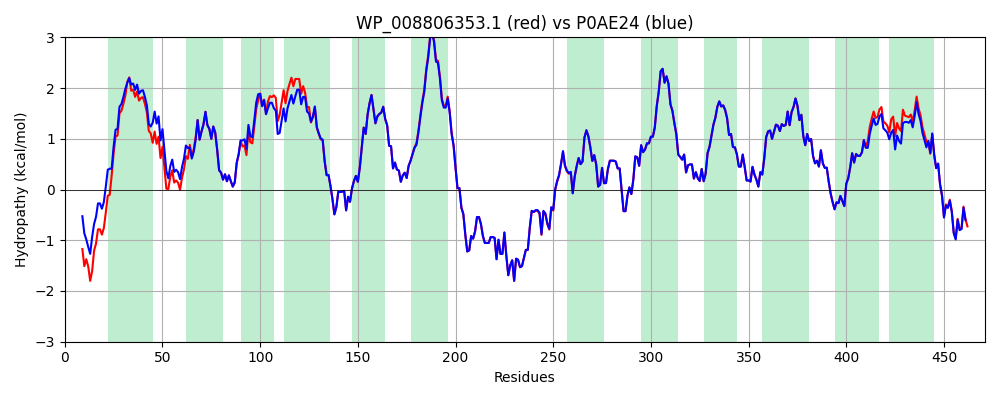

Hit Accession: P0AE24
Hit TCID: 2.A.1.1.2
Hit Description: gnl|BL_ORD_ID|8767 gnl|TC-DB|P0AE24|2.A.1.1.2 Arabinose-proton symporter - Escherichia coli.
Mach Len: 471
e:0.000000
Query TMS Count : 12
Hit TMS Count: 12
TMS-Overlap Score: 12.800000
Predicted Substrates:CHEBI:4265;aldehydo-D-xylose, CHEBI:22599;arabinose, CHEBI:6181;L-arabinopyranose, CHEBI:4139;D-galactopyranose
BLAST Alignment:
Score: 2270 , Bit scores: 879 bits, E-value: 0.0e+00, Alignment length: 471, Percentage identity: 94
Query: 1 MTSISNDSALTPRTQRDTRRMNWFVSIAAAVAGLLFGLDIGVISGALPFITDHFTLSSQLQEWVVSSMMLGAAIGALFNGWLSFRLGRKYSLMAGAVLFVAGSIGSAFAASVEVLLIARVVLGVAVGIASYTAPLYLSEMASENVRGKMISMYQLMVTLGIVLAFLSDTAFSYSGNWRAMLGVLALPAVILIILVVFLPNSPRWLAEKGRHIEAEEVLRMLRDTSEKARDELNEIRESLKLKQGGWALFKVNRNVRRAVFLGMLLQAMQQFTGMNIIMYYAPRIFKMAGFTTTEQQMIATLVVGLTFMFATFIAVFTVDKAGRKPALKIGFSVMALGTLVLGYCLMQFDNGTASSGLSWLSVGMTMMCIAGYAMSAAPVVWILCSEIQPLKCRDFGITCSTTTNWVSNMIIGATFLTLLDAIGAAGTFWLYTVLNVAFIGVTFWLIPETKNVTLEHIERNLMAGEKLRNIG 471
M +I+ +SALTPR+ RDTRRMN FVS+AAAVAGLLFGLDIGVI+GALPFITDHF L+S+LQEWVVSSMMLGAAIGALFNGWLSFRLGRKYSLMAGA+LFV GSIGSAFA SVE+L+ ARVVLG+AVGIASYTAPLYLSEMASENVRGKMISMYQLMVTLGIVLAFLSDTAFSYSGNWRAMLGVLALPAV+LIILVVFLPNSPRWLAEKGRHIEAEEVLRMLRDTSEKAR+ELNEIRESLKLKQGGWALFK+NRNVRRAVFLGMLLQAMQQFTGMNIIMYYAPRIFKMAGFTTTEQQMIATLVVGLTFMFATFIAVFTVDKAGRKPALKIGFSVMALGTLVLGYCLMQFDNGTASSGLSWLSVGMTMMCIAGYAMSAAPVVWILCSEIQPLKCRDFGITCSTTTNWVSNMIIGATFLTLLD+IGAAGTFWLYT LN+AF+G+TFWLIPETKNVTLEHIER LMAGEKLRNIG
Sbjct: 1 MVTINTESALTPRSLRDTRRMNMFVSVAAAVAGLLFGLDIGVIAGALPFITDHFVLTSRLQEWVVSSMMLGAAIGALFNGWLSFRLGRKYSLMAGAILFVLGSIGSAFATSVEMLIAARVVLGIAVGIASYTAPLYLSEMASENVRGKMISMYQLMVTLGIVLAFLSDTAFSYSGNWRAMLGVLALPAVLLIILVVFLPNSPRWLAEKGRHIEAEEVLRMLRDTSEKAREELNEIRESLKLKQGGWALFKINRNVRRAVFLGMLLQAMQQFTGMNIIMYYAPRIFKMAGFTTTEQQMIATLVVGLTFMFATFIAVFTVDKAGRKPALKIGFSVMALGTLVLGYCLMQFDNGTASSGLSWLSVGMTMMCIAGYAMSAAPVVWILCSEIQPLKCRDFGITCSTTTNWVSNMIIGATFLTLLDSIGAAGTFWLYTALNIAFVGITFWLIPETKNVTLEHIERKLMAGEKLRNIG 471 | Protein Hydropathy Plots: |
|---|
|  |  |
Pairwise Alignment-Hydropathy Plot:
|
|---|
|  |